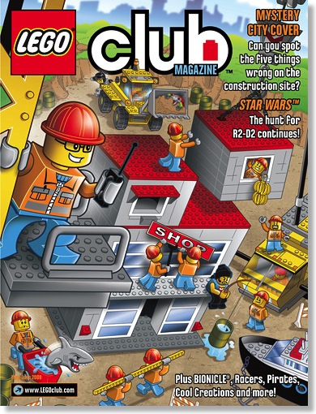
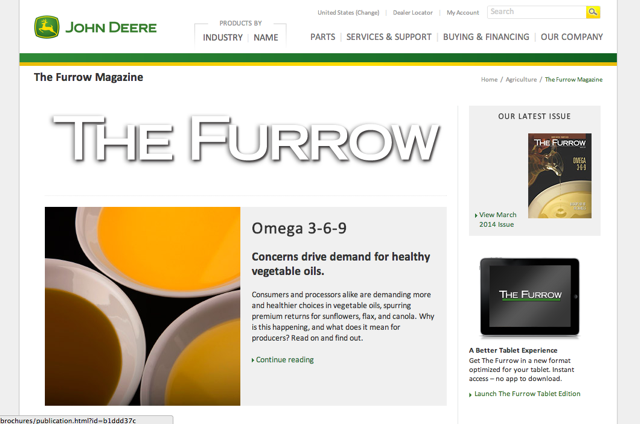
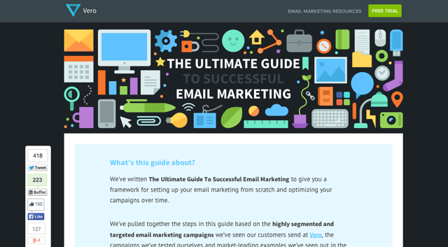
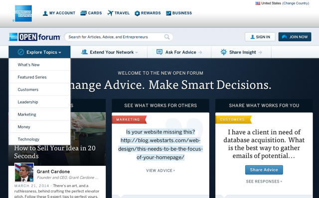
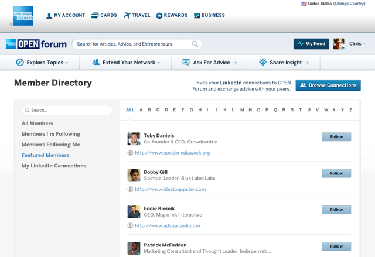
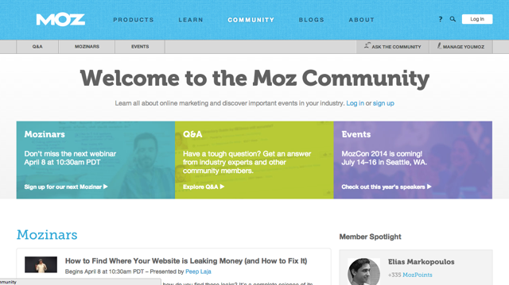

Did you know that Lego has been marketing content since 1987?
That Red Bull sends its Red Bulletin magazine to over 5 million subscribers?
That John Deere runs the largest farming magazine worldwide, and it’s been in circulation since 1895?
Content marketing is hugely popular in 2014. Particularly popular among B2B marketing-software companies, content marketing is a powerful way to attract super-targeted customers who want to buy in your space.
Some argue about whether it can work in other verticals or for other online industries.
The answer is that whether you’re in e-commerce, B2C software or something even crazier, these ideas should give you some inspiration for how you can put epic content marketing to work for you.
Entertain your audience
If you were 10 years old, how would a magazine â€full of comic adventures, games and puzzles, building challenges and cool creations†sound?
Entertaining, that’s how!
The above quote is Lego’s description of its free Lego Club magazine (sign up if you want; I’m tempted).

Lego is about imagination. It’s a way to teach children that they can be creative and to test their imaginative limits. If you can dream it, then you can build it with Legos. The magazine, which targets the primary users of the company’s product, gives kids ideas — in the form of comics and games and, even more directly, in the form of creations — that they can implement.
There is always a new Lego product. By inspiring its young target market, Lego is ensuring there will always be children asking their parents for the latest fire truck!
Entertainment is certainly one way to approach content marketing. It is essential that you understand your audience. Recently, The Tonight Show has been using entertaining online content to draw a growing audience. Jimmy Fallon’s celebrity guests, outrageous skits and willingness to take it up a notch have shown how powerful entertaining content can be (even when advertising an entertainment show!).
For a more recent example, look no further than President Obama’s feature on Between Two Ferns. Love or hate it, it was a sensational example of entertainment content to promote a particular objective (the Affordable Care Act in this case).
Perhaps the best B2B example that comes to mind is Wistia. The documentation and feature videos are nothing but pure fun. Wistia makes you want to be a part of its zany and growing world, and the company displays a consistent example of content marketing pointed to by so many great content marketers.
It doesn’t have to be a video or a magazine. How can you incorporate some entertainment into your content marketing (or make that the feature of your content marketing) to engage viewers and drive purchases?
Inform your audience
John Deere’s The Furrow is a 118-year-old magazine with a fascinating story.
A true example of content marketing, The Furrow started life as an advertorial magazine for John Deere tractors and farming equipment. Progressing through the archives, you can see that, relatively quickly, the magazine became a magazine that told stories, even when it dealt with John Deere products.

As David Jones (publications manager at The Furrow) points outs: “Telling stories that folks enjoy reading — and that they can use in their own operations — has been the recipe since the beginning.”
David couldn’t have better summarized the point of content marketing. With a circulation of just under 2 million worldwide, The Furrow continues to be a powerful way for John Deere to do three things:
- Get new customers
- Sell more products to longtime customers
- Build loyalty and, in turn, referrals
The Furrow has risen to legendary status; it is a brand in its own right, and one with a fiercely loyal readership that still prefers the paper version over digital copy. Archival copies of the magazine regularly fetch amazing prices on auction sites.
Informing your audience by telling stories that share knowledge can just as easily work for you.
Neil Patel’s Quick Sprout is a shining example of a business that consistently and clearly informs its audience with stories that matter.

The epic guides that Neil puts out regularly, such as The Advanced Guide to SEO, are a particularly good example of sharing in-depth information in a way that is accessible and interesting to the reader. Neil’s audience is made up of startup entrepreneurs and online marketers. His content speaks directly to them, and his examples, always practical and transparent, are generally based on his own experiments.

We recently created The Ultimate Guide to Email Marketing here on the Vero blog, and it has been a roaring success. The guide has garnered more than 1,000 social media shares and helped push our traffic to new heights — a fine example of how truly educational and informative content pays dividends.
What you sow, so shall you reap?
You might not have guessed that telling stories about tractors could build such a loyal following, but understanding your target market and consistently giving them practical, influential advice is a surefire way to build trust and loyalty. It’s also a surefire way to build a customer base.
Build a community
American Express, the credit card company, runs one of the largest and most interesting small-business marketing forums in the world.

You may not have heard of the forum, but it accounts for as many new credit card inquiries as any other marketing channel that American Express uses — even those fancy television ads!
The trick? A loyal community. One of the great things about building a community is that, if done right, it can take on a life of its own. The American Express forum allows business owners and managers to share tips and tricks and to learn from others. It builds heavily on LinkedIn in a number of ways and is very much a place for relevant information for your business.

Creating a community like this is hard work and requires a lot of time, but the results can be stellar.
Online, you can leverage whatever is most relevant to your audience. Soludos, maker of espadrilles, encourages its customers to share photos of themselves — usually wearing the espadrilles — on the company’s Instagram page:
Not only is Soludos engaging with its community, but the content is user-generated, which makes it easier for customers to relate and easier for Soludos to sustain.
Moz.com is the premier example from the world of B2B SaaS software. Moz’s events and its user-generated blog, Mozinars, are all part of the company’s community-driven approach to sharing useful SEO and online-marketing stories.

One of the best examples is the Hacker News blog, run by YCombinator. Hacker News is certainly one contributing factor in positioning YC as perhaps the most successful and powerful incubator in the world. A haven for tech and startup discussion, it can, to this day, make or break stories and drive huge amounts of traffic to a website overnight — all without any direct influence from YC.
How can you shape the community around your product? Could you use a social network? Should you create a website or forum of your own that gets users sharing their stories?
Community building pays off. It’s a long-term investment, but a powerful one if tackled at the right time. Be patient and caring and your community will flourish!
Over to you
Content marketing isn’t easy, and all of the companies mentioned here are well established and have been playing the game for a long time, but the results can be astounding.
One of the great things about content is that it builds exponentially, and once it’s at the peak, your content is like a glacier: big, powerful and not going anywhere.
How can you entertain, inform or engage your customers with content? If you run an online business, check out these practical tips on how you can kick-start your content marketing and learn how you can incorporate email into your strategy to convert leads into customers.